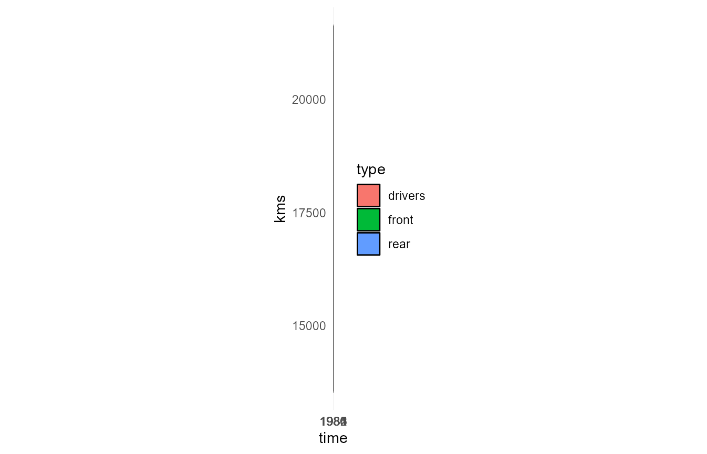
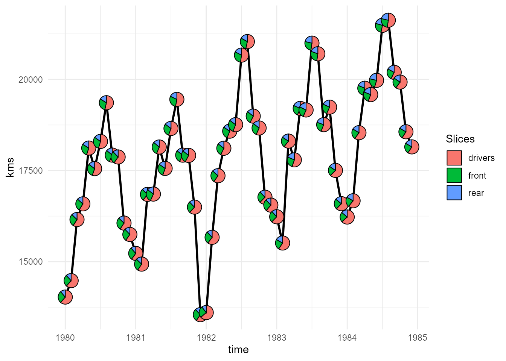
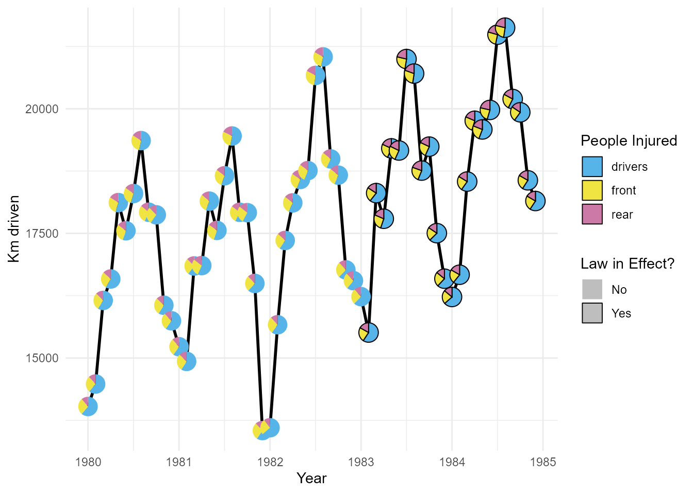

This example shows the use of PieGlyph package to replace
the points in a time series plot with pie charts showing the proportions
of different variables. Generally, time series plots don’t have an
aspect ratio of 1 as the width of the plot is very large compared to the
height. Due to this wide nature of time series plots previous attempts
at adding pie-charts to the plot resulted in the circular pie-charts
getting flattened into ellipses. This could be rectified by forcing the
user to make the plot have equal dimensions, however that caused more
problems as the resultant plots then became squashed between white
space. These issues rendered the plots uninterpretable.
The PieGlyph package attempts to solve this problem by
creating axis invariant pie-charts which wouldn’t get squashed into
ellipses and also wouldn’t get scaled along with the plot dimensions.
Load data
The data used for this example is the Seatbelts data which shows the monthly totals of car drivers and passengers killed or seriously injured from Jan 1969 to Dec 1984 in Great Britain.
Seatbelts <- data.frame(Seatbelts, time = time(Seatbelts))
head(Seatbelts)
#> DriversKilled drivers front rear kms PetrolPrice VanKilled law time
#> 1 107 1687 867 269 9059 0.1029718 12 0 1969.000
#> 2 97 1508 825 265 7685 0.1023630 6 0 1969.083
#> 3 102 1507 806 319 9963 0.1020625 12 0 1969.167
#> 4 87 1385 814 407 10955 0.1008733 8 0 1969.250
#> 5 119 1632 991 454 11823 0.1010197 10 0 1969.333
#> 6 106 1511 945 427 12391 0.1005812 13 0 1969.417
For each month over the 15 years the variables
DriversKillled gives the number of car drivers killed,
drivers describes the number of car drivers killed or
seriously injured, front gives the number of front-seat
passengers killed or seriously injured and rear gives the
number of rear-seat passengers killed or seriously injured,
VanKilled contains the number of van (‘light goods
vehicle’) drivers killed, kms gives the number of
kilometers driven in the particular month while PetrolPrice
contains the price of petrol. Finally, law describes
whether or not it was compulsory to wear seat belts.
For the visualisation we’ll be using a subset of the Seatbelts data from Jan 1980 to Dec 1984.
plot_data <- Seatbelts[133:192, ]
head(plot_data)
#> DriversKilled drivers front rear kms PetrolPrice VanKilled law time
#> 133 115 1665 748 306 14027 0.1037750 7 0 1980.000
#> 134 95 1361 593 263 14478 0.1071142 4 0 1980.083
#> 135 92 1506 720 323 16155 0.1073748 10 0 1980.167
#> 136 100 1360 646 310 16585 0.1116954 4 0 1980.250
#> 137 95 1453 765 424 18117 0.1106382 8 0 1980.333
#> 138 114 1522 820 403 17552 0.1118552 8 0 1980.417The number of kilometers driven in each month changes over time. It would be difficult to visualise this change over time whilst also showing the proportion of drivers/passengers injured over the time period using a simple time series plot. However, if we replace the points in the plot with pie-charts we can simultaneously visualise both the distance traveled and the proportion of injuries over time.
Create Plots
Problems with existing techniques
Create a pie-chart plot for the Seatbelts data using the
scatterpie R package.
p <- ggplot(plot_data, aes(x = time, y = kms))+
geom_line(linewidth = 1)+
geom_scatterpie(aes(x = time, y = kms),
colour = 'black',
data = plot_data,
cols = c('drivers','front', 'rear'))+
theme_minimal()
As mentioned before the pie-charts are squished due to the wide nature of the plot and are illegible.
Using coord_fixed() to fix the plot dimensions worsens the
problem further and renders the plot unintelligible.
p + coord_fixed()
Fixing the problems using PieGlyph
PieGlyph fixes this problem by creating the pie charts independently of the plot axes and thus the plot dimensions have no effects on the pie charts
pl <- ggplot(plot_data, aes(x = time, y = kms))+
# Add the lines joining the pie-charts
geom_line(linewidth = 1)+
# Add pie-chart showing proportion of people injured
geom_pie_glyph(colour = 'black',
slices = c('drivers', 'front', 'rear'))+
# Change theme of plot
theme_minimal()
pl 
We can also highlight the months where the seatbelt law was in effect, by mapping them to the pie-borders.
pl <- ggplot(plot_data, aes(x = time, y = kms))+
# Add the lines joining the pie-charts
geom_line(linewidth = 1)+
# Add pie-chart showing proportion of people injured
# Also map the pie-borders to show whether seatbelt law was present
geom_pie_glyph(aes(linetype = as.factor(law)),
colour = 'black',
slices = c('drivers', 'front', 'rear'))+
# Adjust the style of borders
scale_linetype_manual(values = c(0, 1),
labels = c('No', 'Yes'))+
# Plot theme
theme_minimal()
pl 
We can then adjust any aesthetics of our choice in the plot using the usual ggplot functions.
pl +
# Colours of the pie-sectors
scale_fill_manual(values = c('#56B4E9','#F0E442','#CC79A7'))+
# Axis and legend titles
labs(x = 'Year', y = 'Km driven',
fill = 'People Injured', linetype = 'Law in Effect?')